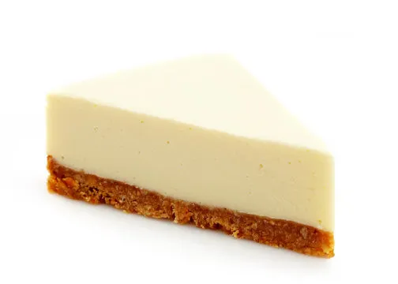

Cheesecake Recipe

Cheesecake is a sweet dessert consisting of one or more layers. The main, and thickest layer, consists of a mixture of soft, fresh cheese (typically cream cheese or ricotta), eggs, and sugar. If there is a bottom layer, it often consists of a crust or base made from crushed cookies (or digestive biscuits), graham crackers, pastry, or sometimes sponge cake.
Here is a recipe for cheesecake:
Prep time: 20 minutes
Cook time: 60 minutes
Total time: 80 minutes
Servings: 12
Yield: 1 cheesecake
Ingredients
- 2 cups graham cracker crumbs
- 1/2 cup melted butter
- 2 cups cream cheese
- 1 cup sugar
- 1 teaspoon vanilla extract
- 4 eggs
- 1 cup sour cream
- 1/4 cup flour
Instructions
- Preheat oven to 325°F (165°C).
- Mix graham cracker crumbs and melted butter in a bowl. Press the mixture into the bottom of a 9-inch springform pan.
- In a large bowl, beat the cream cheese and sugar until smooth. Add the vanilla extract and mix well.
- Add the eggs one at a time, beating well after each addition.
- Mix in the sour cream and flour until smooth.
- Pour the cream cheese mixture over the crust in the springform pan.
- Bake in the preheated oven for 50-60 minutes, or until the center is set.
- Allow the cheesecake to cool in the pan, then refrigerate for at least 4 hours before serving.
- Enjoy!
Back to homepage